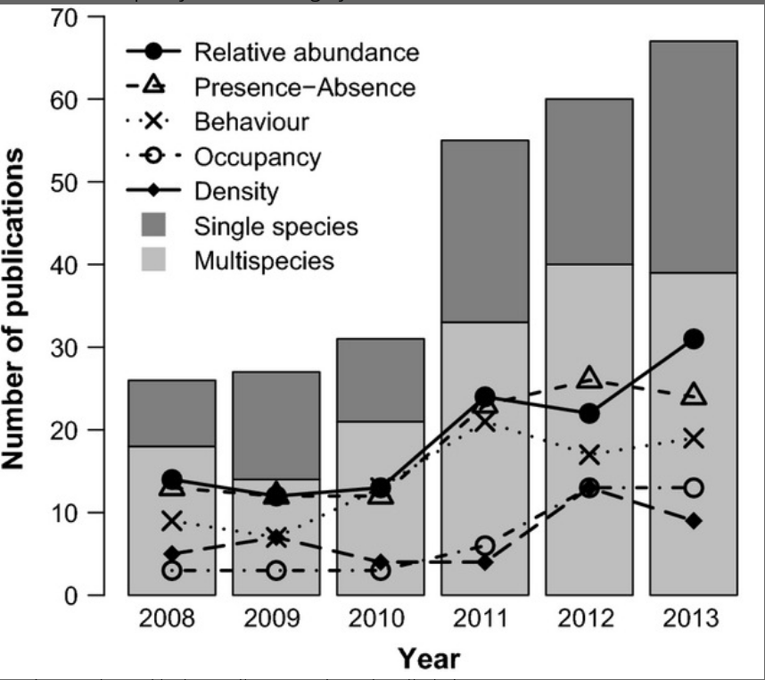
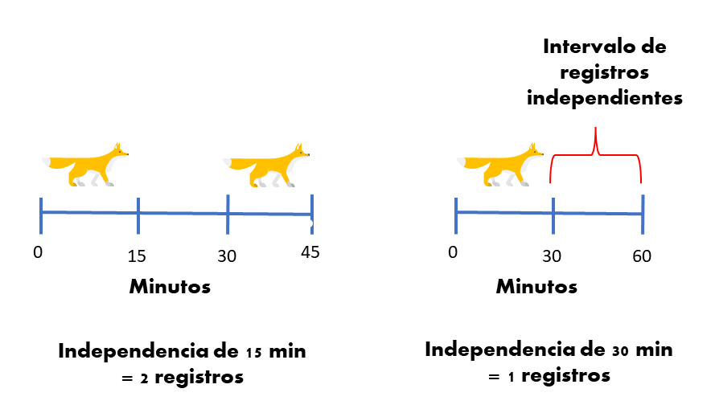

library(camtrapR) # Camera Trap Data Management and Preparation of Occupancy and Spatial Capture-Recapture Analyses
library(tidyverse) # Easily Install and Load the 'Tidyverse'
library(leaflet) # Create Interactive Web Maps with the JavaScript 'Leaflet' Library
library(sp) # Classes and Methods for Spatial Data
library(ggtext) # Improved Text Rendering Support for 'ggplot2'
library(AICcmodavg) # Model Selection and Multimodel Inference Based on (Q)AIC(c)
library(broom) # Convert Statistical Objects into Tidy Tibbles
library(ggeffects) # Create Tidy Data Frames of Marginal Effects for 'ggplot' from Model Outputs
library(performance) # Assessment of Regression Models PerformanceIndice de ¿abundancia? relativa (RAI)
Introducción al uso y limitaciones del índice de abundancia relativa en estudios de fototrampeo.
La abundancia y las cámaras trampa
La estimación de la abundancia de poblaciones es de vital importancia para la conservación de la vida silvestre. En el caso de los mamíferos, las cámaras trampa son una de las métodos de muestreo más usados (Burton et al. 2015).

Especies marcadas y no marcadas
En especies marcadas o con marcas naturales es posible usar modelos de captura recaptura para estimar la abundancia (Wearn y Glover-Kapfer 2017).
Pero en especies que no tienen marcas es difícil o imposible reconocer individuos a partir de fotografías, lo que no permite usar modelos de captura recaptura.
En estos casos muchas veces se usan índices para realizar inferencias sobre la abundancia de especies (O’Connell, Nichols, y Karanth 2010; Timothy G. O’Brien, Kinnaird, y Wibisono 2003).
Índice de ¿abundancia? relativa
El índice más usado en fototrampeo es el número de fotos de especies por día de cámara trampa (la verdad no conozco otro), también conocido como índice de abundancia relativo (Relative abundance index ; RAI), es nombrado como RAI2 por Timothy G. O’Brien, Kinnaird, y Wibisono (2003) .
\[ RAI= \frac{Número-de-registros}{días-cámara}* 100 \]
la multiplicación por 100 es simplemente para estandarizar el cálculo y hacer más sencilla cualquier comparación que se desee.
Del RAI a la abundancia
Cómo cualquier otro índice, la utilidad del RAI para realizar inferencias sobre la abundancia de especies depende de que cumpla con ciertos supuestos generales.
Los registros fotográficos deben ser independientes en el tiempo
Población cerrada, el RAI no cambia durante el muestreo
Todos los animales/individuos son detectados si están presentes
Sí todo esto es cierto para el RAI, entonces se espera que teóricamente tenga una correlación con la abundancia poblacional “real” (O’Connell, Nichols, y Karanth 2010; Timothy G. O’Brien, Kinnaird, y Wibisono 2003).
Registros independientes ⏲️
Seguramente en tus proyectos o tesis te han dicho que debes considerar solamente los registros independientes para calcular el RAI. Pero, ¿qué es un registro independiente?
Muchas personas intuyen que un registro independiente es aquel donde se tiene cierta certeza de que el mismo individuo no es fotografiado de manera consecutiva. Entonces, muy inocentemente definen en su tesis o artículo 30/60/1440 minutos como el umbral mágico, en el cual dos registros no pertenecen al mismo individuo. Citando seguramente a otra persona que también ha hecho lo mismo (R. Sollmann 2018).
Estamos olvidando algo crucial y es que usamos el RAI porque no podemos reconocer individuos y por lo tanto no tenemos la certeza de que un individuo diferente pasa en la cámara después de xx cantidad de tiempo.
Realmente definimos los registros “independientes” para evitar las pseudo-replicas temporales. Es decir, registros que nos dan la misma información debido a que están muy cercanos entre sí. Pero, elegir un intervalo no es una tarea trivial, ya que: un intervalo muy pequeño puede hacer que tengamos registros dependientes, lo que resulta en que sobre-estimemos el índice o que se invaliden muchas pruebas estadísticas (Carroll y Pearson 2000). Pero escoger un intervalo muy grande puede hacer que perdamos información, lo cual no es algo deseable para especies poco comunes.

¿ Cómo escoger un intervalo adecuado? sigue siendo una pregunta difícil. Lo mejor que podemos hacer es definir ese intervalo con base en el conocimiento ecológico y del movimiento de la especie objetivo (R. Sollmann 2018). Existe también la posibilidad de definir el umbral de independencia de manera más formal explorando la autocorrelación temporal de los registros (Kays y Parsons 2014; F. Iannarilli et al. 2019) o la inspección de los intervalos de registros subsecuentes (Yasuda 2004).

Por lo general las técnicas estadísticas formales para definir independencia temporal son poco usadas por la falta de información y herramientas que sean relativamente difíciles de aplicar. Aunque en este campo el paquete lorelogram (F. Iannarilli et al. 2019) parece ser muy promisorio. En todo caso las primeras aplicaciones del paquete muestran que para la mayoría de los casos la dependencia espacial se pierde con tan solo 3 minutos y en casos extremos 15 min (con atrayentes) (Fabiola Iannarilli et al. 2021).
Población cerrada
Seguramente la mayoría también ha escuchado hablar del supuesto de población cerrada. De manera general una población cerrada se da idealmente en determinado periodo de tiempo donde no sucedan muertes, nacimientos, migración o emigración de individuos (Schoen y Kim 1991). Esto es particularmente importante cuando intentamos hacer inferencias sobre el parámetros poblacionales de una especie, en este caso abundancia.
Vamos a verlo con un ejemplo exagerado, pero espero que ilustre lo importante que puede ser el supuesto. Imaginemos que tenemos tres años de conteos de una población de un cánido en un área determinada. Por algún motivo esta población esta disminuyendo cada año. Sin embargo, sí yo defino mi temporada de muestreo como los 3 años, no será posible evidenciar la disminución de la población. Al realizar cada conteo por año si sera posible. Esto mismo puede suceder a escala de meses o de temporadas climáticas, pero claro todo va a depender del sistema de estudio y el conocimiento que tengamos del mismo.
¿ Detectamos todo los que existe ?
El RAI supone que todos los individuos que se encuentren en el área serán fotografiados, es decir que la probabilidad de detección es perfecta. En otras palabras, si tenemos la total seguridad de registrar todos los individuos que pasen en frente de la cámara trampa, tendremos la certeza de que los cambios en la tasa fotográfica se deban a los cambios en la abundancia de la especie. Básicamente que la relación de la abundancia real y el RAI sea monotónica (Timothy G. O’Brien 2011).
Autores cómo Palmer et al. (2018) han demostrado que bajo ciertas circunstancias el RAI puede ser un buen reflejo de la abundancia. No obstante, en la mayoría de los casos la probabilidad de detección de las especies no es perfecta (Kéry et al. 2009; Burton et al. 2015). Esto quiere decir que es bastante probable que pese a que no detectemos a una especie en una unidad y día determinado, es difícil llegar a concluir que en efecto esta ausente. Lo cual termina por generar que subestimemos el parámetro de interés (Martin-Garcia et al. 2022).

En cámaras trampa la detección imperfecta es un fenómeno muy común. Recordemos que como herramientas de monitoreo pasivo las cámaras tienen un área efectiva de muestreo bastante pequeña (Andrade-Ponce et al. 2021; Moeller et al. 2022). En otras palabras, la probabilidad de que una especie pase frente al área donde el sensor de la cámara se active y sea registrada, realmente es baja (Moeller et al. 2022).
Existen diversos factores que pueden llegar a afectar la detección de las especies, desde su abundancia natural, el tamaño del ámbito hogareño, el tipo de hábitat, el lugar en que ubiquemos la cámara, entre otras (Burton et al. 2015; Andrade-Ponce et al. 2021; Guillera-Arroita 2016). Lo cierto es que se ha demostrado que llegar a ignorar la detección imperfecta de las especies puede hacernos llegar a conclusiones totalmente contrarias sobre la abundancia de las mismas (Rahel Sollmann et al. 2013).
El uso del espacio afecta la interpretación
Si en algún mundo idílico cumplimos con los supuestos que ya mencionamos, podríamos llegar a pensar que los cambios en el RAI son un buen reflejo de los cambios en la abundancia de poblacional. No obstante, el uso del hábitat o del espacio también puede afectar la tasa de registro (Stewart et al. 2018). Por ejemplo, especies que se mueven rápido a lo largo de su territorio pueden ser detectadas mayor número de veces, mientras que una especie de movimiento “lento” no. De manera, similar especies con ámbitos hogareños más amplios, pueden ser detectadas en distintas estaciones, aumentando el número de detecciones totales (Broadley et al. 2019).

Creo que una manera sensata de usar el RAI es como una medida de actividad o intensidad de uso (Timothy G. O’Brien 2011). Por supuesto seguimos teniendo el problema de la detección imperfecta, pero al menos no hacemos inferencia sobre una abundancia, sino sobre la relación entre la tasa de detección y alguna covariable como el hábitat o un disturbio. Precisamente, en este ejemplo vamos a usar el RAI para explicar la relación de la especie con algunas covariables y para ello usaremos modelos lineales. Manos a la obra:
Script
PAquetes
Usaremos las siguientes librerías en R
Datos
Vamos a cargar unos datos de cámaras trampa del año 2020. Seguiremos el flujo de trabajo que emplea camtrapR, por lo cual cargaremos las tablas que generamos a partir del paquete: la tabla de funcionamiento de cámaras y la de registros.
Vamos a cargar la tabla de operación de cámaras
# Usaré la función read.delim debido a que mi tabla esta en formato txt, pero generalmente camtrapR genera csv. En ese caso se usa read.csv
CT_table <- read.delim("Data/CT_cams.txt")| Station | utm_y | utm_x | Setup_date | Retrieval_date |
|---|---|---|---|---|
| CBG01 | 2007508 | 696396 | 22/02/2020 | 22/04/2020 |
| CBG02 | 2008327 | 695788 | 22/02/2020 | 22/04/2020 |
| CBG03 | 2009568 | 695414 | 21/02/2020 | 22/04/2020 |
| CBG04 | 2010475 | 695052 | 21/02/2020 | 22/04/2020 |
| CBG05 | 2011016 | 694286 | 21/02/2020 | 22/04/2020 |
| CBG06 | 2007026 | 695603 | 22/02/2020 | 22/04/2020 |
Un paso muy importante es verificar que las coordenadas sean las correctas, y la manera más sencilla de saberlo es mediante gráficos. Nosotros haremos un mapa interactivo para verificar que todo esté en orden
# Generar objeto espacial para el mapa
CT_points <- SpatialPoints(cbind(CT_table$utm_x,
CT_table$utm_y),
proj4string = CRS('+proj=utm +datum=WGS84 +zone=14 +towgs84=0,0,0'))
# Proyectar a WGS solo para este paso
CT_points <- spTransform(CT_points, "+proj=longlat +datum=WGS84")
# Generar el mapa
m <- leaflet() %>%
addProviderTiles(providers$Esri.WorldImagery, group="Satellite") %>% # Imagen satelital
addProviderTiles(providers$Esri.WorldTopoMap, group="Base") %>%
addCircleMarkers(lng=sp::coordinates(CT_points)[,1], lat=sp::coordinates(CT_points)[,2],
popup= paste(CT_table$Station)) %>%
# Layers control
addLayersControl(
baseGroups = c("Satellite", "Base"),
options = layersControlOptions(collapsed = FALSE)
)
mAhora vamos a cargar los registros de las especies. Usaremos la base de datos que genera la función surveReport de CamtrapR, específicamente la del conteo de detección de las especies y la del esfuerzo de muestreo de las cámaras
# Registros sin delta de independencia
registrosD0 <- read.csv("Data/events_by_station_d0.csv")
# Registros con independencia de 15 min
registrosD15 <- read.csv("Data/events_by_station_d15.csv")
# Registros con independencia de 30 min
registrosD30 <- read.csv("Data/events_by_station_d30.csv")
# Registros con independencia de 60 min
registrosD60 <- read.csv("Data/events_by_station_d60.csv")Cada tabla de registros se ve así:
| Station | Species | n_events |
|---|---|---|
| CBG01 | Bassariscus astutus | 0 |
| CBG01 | Bird | 1 |
| CBG01 | Bug | 0 |
| CBG01 | Canis latrans | 0 |
| CBG01 | Canis lupus familiaris | 2 |
| CBG01 | Capra aegagrus hircus | 15 |
Para calcular el RAI ahora necesitamos el dato de funcionamiento de cámaras, el cual también podemos obtener de las salidas del surveReport
Cam_esf <- read.csv2("Data/survey_dates.csv") %>%
select(Station, n_nights_active) # Selecciono las columnas que voy a usar
# NOTA: uso read.csv2 porque mi compu guarda los csv usando el ; como separador| Station | n_nights_active |
|---|---|
| CBG01 | 60 |
| CBG02 | 60 |
| CBG03 | 61 |
| CBG04 | 61 |
| CBG05 | 61 |
| CBG06 | 60 |
Cálculo del RAI
Ya cargué toda la información que necesito para calcular el RAI, ahora solo tengo que unirla en una base y hacer las operaciones.
Para ello vamos a aprovecharnos de la capacidad de dplyr para el manejo de bases de datos.
IAR_D0 <- registrosD0 %>% #Base de datos de registros
left_join(Cam_esf) %>% #Unimos con la base de esfuerzo
group_by(Station, Species) %>% # Agrupamos por cada estación y especie
summarise(IAR= (n_events*n_events*n_nights_active)/100) # Aplicamos la formula para cálcular el RAI y listoJoining with `by = join_by(Station)`
`summarise()` has grouped output by 'Station'. You can override using the
`.groups` argument.De esta manera relativamente sencilla podemos obtener el valor de RAI, para cada especie y cada estación de muestreo. Tenemos que repetir este procedimiento para cada base de datos de distinto umbral de “independencia”. Para hacer todo más eficiente voy a crear una pequeña función que me ahorre algo de código
#Función para RAI rápido
Rai_fun <- function(registros, esfuerzo, delta){
df_RAI <- registros %>% # registros
left_join(esfuerzo) %>% # unir con esfuerzo
group_by(Station, Species) %>% #agrupar por estacion y sp
summarise(IAR = (n_events*n_nights_active)/100) %>% #Calcular IAR
rename_at(., vars(contains("IAR")),list(~paste("IAR_D", delta, sep = "") )) # renombrar la columna con el delta adecuado
return(df_RAI)
}
# Usemos la pequeña función
IAR_D15 <- Rai_fun(registros = registrosD15,
esfuerzo = Cam_esf,
delta = "15")
IAR_D30 <- Rai_fun(registros = registrosD30,
esfuerzo = Cam_esf,
delta = "30")
IAR_D60 <- Rai_fun(registros = registrosD60,
esfuerzo = Cam_esf,
delta = "60")Ahora juntemos todo en una sola base de datos
# Como todos comparten la columna de especies y de Estacion podemos usar un left_join
IAR_delta <- IAR_D0 %>%
left_join(IAR_D15) %>%
left_join(IAR_D30) %>%
left_join(IAR_D60) %>%
filter(Species %in% c("Bassariscus astutus", #filtro de especies
"Canis latrans",
"Conepatus leuconotus",
"Dicotyles angulatus",
"Herpailurus yagouaroundi",
"Lynx rufus",
"Mephitis macroura",
"Nasua narica",
"Odocoileus virginianus",
"Procyon lotor",
"Puma concolor",
"Spilogale angustifrons",
"Sylvilagus floridanus",
"Urocyon cinereoargenteus"
))Joining with `by = join_by(Station, Species)`
Joining with `by = join_by(Station, Species)`
Joining with `by = join_by(Station, Species)`| Station | Species | IAR | IAR_D15 | IAR_D30 | IAR_D60 |
|---|---|---|---|---|---|
| CBG01 | Bassariscus astutus | 0 | 0 | 0 | 0 |
| CBG01 | Canis latrans | 0 | 0 | 0 | 0 |
| CBG01 | Conepatus leuconotus | 0 | 0 | 0 | 0 |
| CBG01 | Dicotyles angulatus | 0 | 0 | 0 | 0 |
| CBG01 | Herpailurus yagouaroundi | 0 | 0 | 0 | 0 |
| CBG01 | Lynx rufus | 0 | 0 | 0 | 0 |
Tenemos el RAI por estación, pero para evaluarlo gráficamente quiero tener un RAI promedio de especie para todas las cámaras en cada delta. De nuevo usaremos el poder de dplyr
IAR_mean <- IAR_delta %>%
pivot_longer(cols = IAR:IAR_D60, #Pasaran a una columna
names_to = "Delta", # Esa columna se llamara Delta
values_to = "IAR") %>% # los valores pasaran a columna llamada IAR
group_by(Species, Delta) %>%
summarise(mean_IAR= mean(IAR), sd_IAR= sd(IAR)) %>%
mutate(Delta= str_remove(Delta, "IAR_")) # Solo para quitar ese pedazo de la columna`summarise()` has grouped output by 'Species'. You can override using the
`.groups` argument.knitr::kable(IAR_mean)| Species | Delta | mean_IAR | sd_IAR |
|---|---|---|---|
| Bassariscus astutus | IAR | 5.026774e+00 | 1.810406e+01 |
| Bassariscus astutus | D15 | 3.183871e-01 | 8.734380e-01 |
| Bassariscus astutus | D30 | 3.183871e-01 | 8.734380e-01 |
| Bassariscus astutus | D60 | 3.183871e-01 | 8.734380e-01 |
| Canis latrans | IAR | 8.565903e+01 | 3.729843e+02 |
| Canis latrans | D15 | 8.845161e-01 | 1.361873e+00 |
| Canis latrans | D30 | 8.845161e-01 | 1.361873e+00 |
| Canis latrans | D60 | 8.845161e-01 | 1.361873e+00 |
| Conepatus leuconotus | IAR | 8.259581e+01 | 1.758284e+02 |
| Conepatus leuconotus | D15 | 1.519032e+00 | 2.324736e+00 |
| Conepatus leuconotus | D30 | 1.519032e+00 | 2.324736e+00 |
| Conepatus leuconotus | D60 | 1.519032e+00 | 2.324736e+00 |
| Dicotyles angulatus | IAR | 1.158646e+04 | 5.513660e+04 |
| Dicotyles angulatus | D15 | 3.083226e+00 | 7.880741e+00 |
| Dicotyles angulatus | D30 | 3.023226e+00 | 7.728507e+00 |
| Dicotyles angulatus | D60 | 2.903226e+00 | 7.195641e+00 |
| Herpailurus yagouaroundi | IAR | 1.935480e-02 | 1.077632e-01 |
| Herpailurus yagouaroundi | D15 | 1.935480e-02 | 1.077632e-01 |
| Herpailurus yagouaroundi | D30 | 1.935480e-02 | 1.077632e-01 |
| Herpailurus yagouaroundi | D60 | 1.935480e-02 | 1.077632e-01 |
| Lynx rufus | IAR | 4.813516e+01 | 8.505259e+01 |
| Lynx rufus | D15 | 1.341935e+00 | 1.557711e+00 |
| Lynx rufus | D30 | 1.341935e+00 | 1.557711e+00 |
| Lynx rufus | D60 | 1.341935e+00 | 1.557711e+00 |
| Mephitis macroura | IAR | 3.024968e+01 | 1.039956e+02 |
| Mephitis macroura | D15 | 6.532258e-01 | 1.812369e+00 |
| Mephitis macroura | D30 | 6.532258e-01 | 1.812369e+00 |
| Mephitis macroura | D60 | 6.532258e-01 | 1.812369e+00 |
| Nasua narica | IAR | 1.598290e+01 | 6.918818e+01 |
| Nasua narica | D15 | 2.364516e-01 | 5.610380e-01 |
| Nasua narica | D30 | 2.364516e-01 | 5.610380e-01 |
| Nasua narica | D60 | 2.167742e-01 | 4.869866e-01 |
| Odocoileus virginianus | IAR | 9.049558e+03 | 2.396276e+04 |
| Odocoileus virginianus | D15 | 9.293226e+00 | 1.111770e+01 |
| Odocoileus virginianus | D30 | 9.233548e+00 | 1.101366e+01 |
| Odocoileus virginianus | D60 | 9.034516e+00 | 1.071171e+01 |
| Procyon lotor | IAR | 1.359355e+01 | 4.141367e+01 |
| Procyon lotor | D15 | 4.751613e-01 | 9.455541e-01 |
| Procyon lotor | D30 | 4.751613e-01 | 9.455541e-01 |
| Procyon lotor | D60 | 4.751613e-01 | 9.455541e-01 |
| Puma concolor | IAR | 8.000000e-02 | 4.454211e-01 |
| Puma concolor | D15 | 2.000000e-02 | 1.113553e-01 |
| Puma concolor | D30 | 2.000000e-02 | 1.113553e-01 |
| Puma concolor | D60 | 2.000000e-02 | 1.113553e-01 |
| Spilogale angustifrons | IAR | 2.216129e+00 | 8.767499e+00 |
| Spilogale angustifrons | D15 | 2.541935e-01 | 6.359862e-01 |
| Spilogale angustifrons | D30 | 2.541935e-01 | 6.359862e-01 |
| Spilogale angustifrons | D60 | 2.541935e-01 | 6.359862e-01 |
| Sylvilagus floridanus | IAR | 4.825027e+03 | 1.421554e+04 |
| Sylvilagus floridanus | D15 | 9.537419e+00 | 1.380820e+01 |
| Sylvilagus floridanus | D30 | 9.204194e+00 | 1.332017e+01 |
| Sylvilagus floridanus | D60 | 8.812903e+00 | 1.257965e+01 |
| Urocyon cinereoargenteus | IAR | 2.770174e+03 | 8.731199e+03 |
| Urocyon cinereoargenteus | D15 | 8.730323e+00 | 1.379761e+01 |
| Urocyon cinereoargenteus | D30 | 8.671290e+00 | 1.372938e+01 |
| Urocyon cinereoargenteus | D60 | 8.554516e+00 | 1.332033e+01 |
Ahora vamos a verlo de manera gráfica
(IARmean_plot <- IAR_mean %>% # base de datos
filter(Delta != "IAR") %>% # Quitar delta 0 para gráfica
ggplot(aes(x= reorder(Delta, -mean_IAR) , y= mean_IAR, group=1))+ # Datos de los ejes
geom_line()+ # Linea
geom_point(aes(col= Delta),
size= 3)+ # Puntos
facet_wrap(.~Species, scales = "free")+ # Hacerlo por especie
labs(y= "Media de IAR",
x= "Delta de de tiempo de registros",
caps= "Sin D0")+
theme_bw()) # TemaComo ven no a todas las especies las afecta igual el umbral de independencia. Hay algunas especies cuyos registros son tan dispersos en el muestreo, que el RAI no cambia con ningún umbral de independencia.
Claro, esta gráfica te ayudará a guiarte, pero debe ir acompañada de una observación de los registros o el cálculo de la autocorrelación temporal para definir el “delta” de tiempo que usaras. Ya estamos trabajando en este último punto y espero en algún futuro cercano poner en linea un tutorial para estimar el umbral de independencia temporal. Por ahora me quedaré con los registros con un delta de 15 minutos.
Ahora veamos los valores de RAI por especie
plot_IAR <- IAR_mean %>%
filter(Delta == "D15") %>%
mutate(Sp_n= paste("*",Species,"*", " (IAR= ",round(mean_IAR, 3) , " ) ", sep = "") ) %>% # Truco para italica de especies
ggplot(aes(x= reorder(Sp_n,mean_IAR), #Ordenar sp
y= mean_IAR))+ # No. eventos
geom_bar(stat= "identity")+ # Geometria
coord_flip()+ # Girar ejes
labs(title = "IAR de especies", # Título
y= "IAR calculado",
x= NULL,
caption = "Registros independencia temporal de 15 minutos año 2020")+ # Sin eje x
theme_minimal()+ # Tema
theme(axis.text.y= element_markdown()) # Itálica nombre de especies
plot_IAR Recordemos que este gráfico es informativo y que no es recomendable comparar el RAI de diferentes especies. Por ejemplo, no sabemos si hay más venados que zorras grises (probablemente no), solo sabemos que los venados son más frecuentemente fotografiados. Hablando de venados, aprovechemos que es una especie con bastantes datos y evaluemos por medio de modelos la relación de su RAI con algunas variables.
Modelando el RAI ü¶å
En este caso lo que nos interesa conocer es cómo la variación del RAI es explicada por distintas condiciones del sitio, vamos a usar nuestra base cruda de delta 15, no la del promedio.
venado <- IAR_D15 %>% # Llamamos la base de datos
filter(Species == "Odocoileus virginianus") # Filtramos la especie que nos interesa Ahora vamos a cargar las variables, escalarlas y finalmente unirlas a la base de IAR
covs.data <- read_csv2("Data/selectedcov_nostd190821.csv")i Using "','" as decimal and "'.'" as grouping mark. Use `read_delim()` for more control.Rows: 31 Columns: 12
-- Column specification --------------------------------------------------------
Delimiter: ";"
chr (5): Station, Cam, MSAVI, Slope, Habitat
dbl (4): utm_y, utm_x, Cluster, Effort
num (3): Vertcover_50, Dcrops, Dpop_G
i Use `spec()` to retrieve the full column specification for this data.
i Specify the column types or set `show_col_types = FALSE` to quiet this message.# UPS hay dos variables numericas que R las lee como caracteres
covs.data$MSAVI <- as.numeric(covs.data$MSAVI)
covs.data$Slope <- as.numeric(covs.data$Slope)
### Separar las variables numéricas y categóricas
cov.num <- covs.data %>%
dplyr::select(where(is.numeric)) %>% # Seleccionar columnas numéricas
scale() %>% # estandarizar
as.data.frame()
cov.fac <- covs.data %>%
dplyr::select(where(is.character)) # Seleccionar variables de caracter
sp_lmdata <- data.frame(cov.fac, cov.num) %>% # Unir covariables
right_join(venado, by= "Station")# Unir con la base de registrosAl tomar el IAR valores continuos suponemos que seguirá un error tipo gaussiano, por lo cual usaremos modelos lineales simples para modelarlo. NOTA: Al no tomar valores negativos quizás pueda ser error tipo gamma pero depende de cada quien probarlo.
# Modelos lineales
# sin variables
m0 <- lm(IAR_D15~ 1, data = sp_lmdata)
# la IAR afectada por la distancia a cultivo
m1 <- lm(IAR_D15~ Dcrops, data = sp_lmdata)
# la IAR afectada por el verdor de la vegetación
m2 <- lm(IAR_D15~ MSAVI, data = sp_lmdata)
# la IAR afectada por la pendiente
m3 <- lm(IAR_D15~ Slope, data = sp_lmdata)
# la IAR afectada por la distancia a poblados
m4 <- lm(IAR_D15~ Dpop_G, data = sp_lmdata)
# la IAR afectada por el tipo de habitat
m5 <- lm(IAR_D15~ Habitat, data = sp_lmdata)Usaremos el criterio de información de Akaike (AIC) para seleccionar el “mejor” modelo. Consiedaremos modelos con un delta AIC menor a dos como igualmente plausibles (Burnham y Anderson 2002).
lista_mods <- list(m0, m1, m2, m3, m4, m5)
mod_names <- c("IAR~ 1",
"IAR~ D_cultivos",
"IAR~ MSAVI",
"IAR~ Slope",
"IAR~ D_poblado",
"IAR~ Habitat"
)
AIC <- aictab(lista_mods,
modnames = mod_names,
second.ord = F, sort = T)
knitr::kable(AIC, 'html', digits = 3)| Modnames | K | AIC | Delta_AIC | ModelLik | AICWt | LL | Cum.Wt | |
|---|---|---|---|---|---|---|---|---|
| 4 | IAR~ Slope | 3 | 230.608 | 0.000 | 1.000 | 0.949 | -112.304 | 0.949 |
| 6 | IAR~ Habitat | 3 | 237.783 | 7.175 | 0.028 | 0.026 | -115.892 | 0.976 |
| 2 | IAR~ D_cultivos | 3 | 239.582 | 8.974 | 0.011 | 0.011 | -116.791 | 0.986 |
| 1 | IAR~ 1 | 2 | 240.287 | 9.679 | 0.008 | 0.008 | -118.144 | 0.994 |
| 3 | IAR~ MSAVI | 3 | 241.791 | 11.183 | 0.004 | 0.004 | -117.896 | 0.997 |
| 5 | IAR~ D_poblado | 3 | 242.287 | 11.678 | 0.003 | 0.003 | -118.143 | 1.000 |
Según el AIC la pendiente es la variable que mejor explica los cambios en RAI del venado en nuestra área de estudio. Veamos los coeficientes del modelo.
modelo <- m3 %>%
tidy()
knitr::kable(modelo, digits = 3)| term | estimate | std.error | statistic | p.value |
|---|---|---|---|---|
| (Intercept) | 9.293 | 1.682 | 5.524 | 0.000 |
| Slope | 6.229 | 1.710 | 3.643 | 0.001 |
pred <- ggeffect(m3, terms= "Slope")
plot(pred)
Alto ahí vaquero. El AIC no te indica que tu modelo se adecuado, así que es deber de nosotros verificar que cumple con todos los supuestos.
check_model(m3)Parece que nuestro modelito no cumple del todo con el supuesto de normalidad en los residuales, tiene heterogeneidad en su varianza y tambi√©n una posible outlier. Por ahora no nos preocuparemos mucho por esto; primero porque es un ejemplo y segundo porque para serles sincero yo invent√© las covariables üòùü§™. Lo que quiero que vean es que a pesar de todo el RAI te puede dar una idea de la relaci√≥n del hábitat con las especies. Claro, estamos subestimando la relaci√≥n por el hecho de no considerar la detecci√≥n imperfecta, pero mientras seamos conscientes de ello y lo discutamos, personalmente creo que sigue siendo valioso.
Conclusiones
El RAI es uno de los indices más usados y probablemente se siga usando mucho en estudios de cámaras trampa. Principalmente porque es sencillo de entender y fácil de calcular. El problema, como vimos, es que para realizar inferencias sobre la abundancia poblacional de las especies es una métrica muy susceptible al sesgo (Gilbert et al. 2020). Esto quiere decir que, la mayoría de las veces el RAI no será un buen reflejo de la abundancia “real” de las especies, por lo cual es peligroso basarnos en él para tomar decisiones sobre el manejo poblacional de las especies, o al menos hay que ser muy muy cuidadosos con lo que podemos concluir. En ese mismo sentido, el RAI tampoco es muy útil para hacer comparaciones entre localidades, temporadas o entre especies, porque como ya vimos, la tasa fotográfica de cada especie puede variar conforme su detección (Anile y Devillard 2015; Fabiola Iannarilli et al. 2021; Rahel Sollmann et al. 2013).
Yo sé, justo ahora parece que estimar la abundancia de especies sin marcas naturales con cámaras trampa es una tarea Quijotesca. Pero no desfallezcan, en éste momento ustedes acaban de salir de la matrix y van a empezar a ser mucho más críticos con sus conclusiones. Además, la estimación de la abundancia de especies es un campo en constante evolución y probablemente sean ustedes quienes empiecen a hacer uso de otras herramientas analíticas mas fuertes que permitan generar estimaciones confiables para responder preguntas ecológicas o determinar la pertinencia de una acción de conservación. Como primer consejo yo les recomiendo tomarse un buen tiempo leyendo a Gilbert et al. (2020) para una introducción general a éste tipo de aproximaciones.
Referencias
Andrade-Ponce, Gabriel, Juan C. Cepeda-Duque, Salvador Mandujano, Karen L. Velásquez-C, Diego J. Lizcano, y Bibiana Gómez-Valencia. 2021. «Modelos de ocupación para datos de cámaras trampa». Mammalogy Notes 7 (1): 200. https://doi.org/10.47603/mano.v7n1.200.
Anile, S., y S. Devillard. 2015. «Study Design and Body Mass Influence RAIs from Camera Trap Studies: Evidence from the Felidae». Animal Conservation 19 (1): 35-45. https://doi.org/10.1111/acv.12214.
Broadley, Kate, A. Cole Burton, Tal Avgar, y Stan Boutin. 2019. «Density-Dependent Space Use Affects Interpretation of Camera Trap Detection Rates». Ecology and Evolution 9 (24): 14031-41. https://doi.org/10.1002/ece3.5840.
Burnham, Kenneth P., y David R. Anderson. 2002. Model Selection and Multimodel Inference: A Practical Information-Theoretic Approach. 2.ª ed. New York: Springer-Verlag. //www.springer.com/us/book/9780387953649.
Burton, A. Cole, Eric Neilson, Dario Moreira, Andrew Ladle, Robin Steenweg, Jason T. Fisher, Erin Bayne, y Stan Boutin. 2015. «Wildlife Camera Trapping: A Review and Recommendations for Linking Surveys to Ecological Processes». Journal of Applied Ecology 52 (3): 675-85. https://doi.org/10.1111/1365-2664.12432.
Carroll, Steven S., y David L. Pearson. 2000. «Detecting and Modeling Spatial and Temporal Dependence in Conservation Biology». Conservation Biology 14 (6): 1893-97. https://doi.org/10.1046/j.1523-1739.2000.99432.x.
Gilbert, Neil A., John D. J. Clare, Jennifer L. Stenglein, y Benjamin Zuckerberg. 2020. «Abundance Estimation of Unmarked Animals Based on Camera-Trap Data». Conservation Biology 00 (0): 1-12. https://doi.org/10.1111/cobi.13517.
Guillera-Arroita, Gurutzeta. 2016. «Modelling of Species Distributions, Range Dynamics and Communities Under Imperfect Detection: Advances, Challenges and Opportunities». Ecography 40 (2): 281-95. https://doi.org/10.1111/ecog.02445.
Iannarilli, Fabiola, John Erb, Todd W. Arnold, y John R. Fieberg. 2021. «Evaluating species-specific responses to camera-trap survey designs». Wildlife Biology 2021 (1). https://doi.org/10.2981/wlb.00726.
Iannarilli, F., T. W. Arnold, J. Erb, y J. R. Fieberg. 2019. «Using Lorelograms to Measure and Model Correlation in Binary Data: Applications to Ecological Studies». Methods in Ecology and Evolution 10 (12): 2153-62. https://doi.org/10.1111/2041-210X.13308.
Kays, Roland, y Arielle Waldstein Parsons. 2014. «Mammals in and Around Suburban Yards, and the Attraction of Chicken Coops». Urban Ecosystems 17 (3): 691-705. https://doi.org/10.1007/s11252-014-0347-2.
Kéry, Marc, Robert M. Dorazio, Leo Soldaat, Arco Van Strien, Annie Zuiderwijk, y J. Andrew Royle. 2009. «Trend Estimation in Populations with Imperfect Detection». Journal of Applied Ecology 46 (6): 1163-72. https://doi.org/10.1111/j.1365-2664.2009.01724.x.
Martin-Garcia, Sara, Mariano Rodríguez-Recio, Iván Peragón, Itzcóatl Bueno, y Emilio Virgós. 2022. «Comparing Relative Abundance Models from Different Indices, a Study Case on the Red Fox». Ecological Indicators 137 (abril): 108778. https://doi.org/10.1016/j.ecolind.2022.108778.
Moeller, Anna K., Scott J. Waller, Nicholas J. DeCesare, M. Colter Chitwood, y Paul M. Lukacs. 2022. «Best Practices to Account for Capture Probability and Viewable Area in Camera-Based Abundance Estimation». Remote Sensing in Ecology and Conservation, agosto. https://doi.org/10.1002/rse2.300.
O’Brien, Timothy G. 2011. «Abundance, density and relative abundance: a conceptual framework». En, 71-96. Springer.
O’Brien, Timothy G., Margaret F. Kinnaird, y Hariyo T. Wibisono. 2003. «Crouching Tigers, Hidden Prey: Sumatran Tiger and Prey Populations in a Tropical Forest Landscape». Animal Conservation 6 (2): 131-39. https://doi.org/10.1017/S1367943003003172.
O’Connell, Allan F., James D. Nichols, y K. Ullas Karanth. 2010. Camera Traps in Animal Ecology: Methods and Analyses. Springer Science & Business Media.
Palmer, Meredith S., Alexandra Swanson, Margaret Kosmala, Todd Arnold, y Craig Packer. 2018. «Evaluating Relative Abundance Indices for Terrestrial Herbivores from Large-Scale Camera Trap Surveys». African Journal of Ecology 56 (4): 791-803. https://doi.org/10.1111/aje.12566.
Schoen, Robert, y Young J. Kim. 1991. «Movement Toward Stability as a Fundamental Principle of Population Dynamics». Demography 28 (3): 455-66. https://doi.org/10.2307/2061467.
Sollmann, R. 2018. «A Gentle Introduction to Camera-Trap Data Analysis». African Journal of Ecology 56 (4): 740-49. https://doi.org/10.1111/aje.12557.
Sollmann, Rahel, Azlan Mohamed, Hiromitsu Samejima, y Andreas Wilting. 2013. «Risky Business or Simple Solution Relative Abundance Indices from Camera-Trapping». Biological Conservation 159 (marzo): 405-12. https://doi.org/10.1016/j.biocon.2012.12.025.
Stewart, Frances E. C., Jason T. Fisher, A. Cole Burton, y John P. Volpe. 2018. «Species Occurrence Data Reflect the Magnitude of Animal Movements Better Than the Proximity of Animal Space Use». Ecosphere 9 (2): e02112. https://doi.org/10.1002/ecs2.2112.
Wearn, Oliver R., y Paul Glover-Kapfer. 2017. Camera- trapping for conservation: a guide to best practices. 1.ª ed. Woking, United Kingdom: WWF conservation technology series.
Yasuda, Masatoshi. 2004. «Monitoring Diversity and Abundance of Mammals with Camera Traps: A Case Study on Mount Tsukuba, Central Japan». Mammal Study 29 (1): 37-46. https://doi.org/10.3106/mammalstudy.29.37.